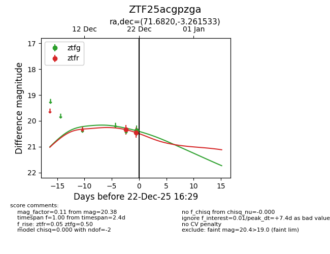
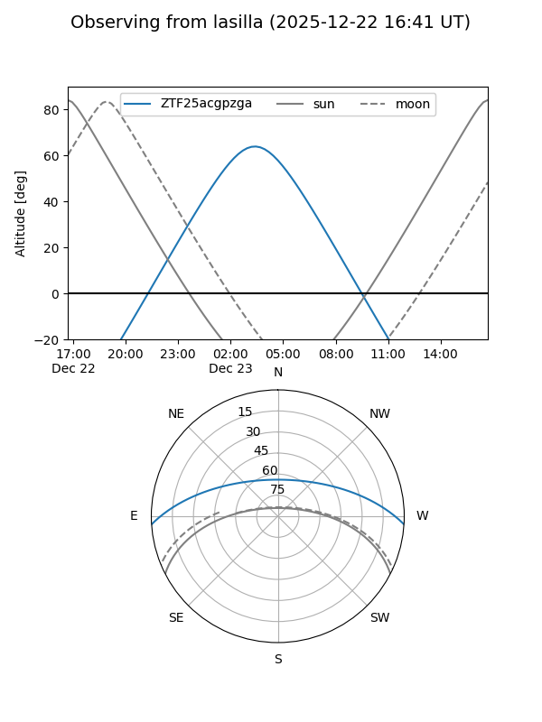
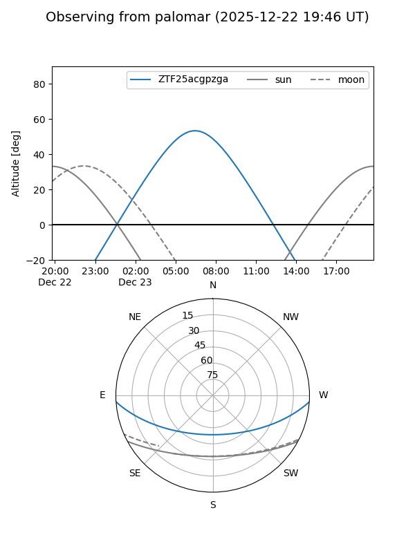

ZTF25acgpzga
Target ZTF25acgpzga at 2025-12-22 16:31
Aliases and brokers:
FINK: fink-portal.org/ZTF25acgpzga
Lasair: lasair-ztf.lsst.ac.uk/objects/ZTF25acgpzga
ALeRCE: alerce.online/object/ZTF25acgpzga
alt names
ZTF25acgpzga (ztf,fink_ztf)
Coordinates:
equatorial (ra, dec) = 71.6820,-3.26153
equatorial (HMS+DMS) = 04:46:43.67,-03:15:41.52
galactic (l, b) = (200.7088,-29.07378)
Flags:
Photometry:
last ztfg=20.38, ztfr=20.45
1 ztfg, 2 ztfr detections
Lightcurve

Visibility


Additional plots